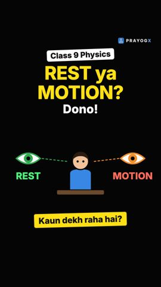
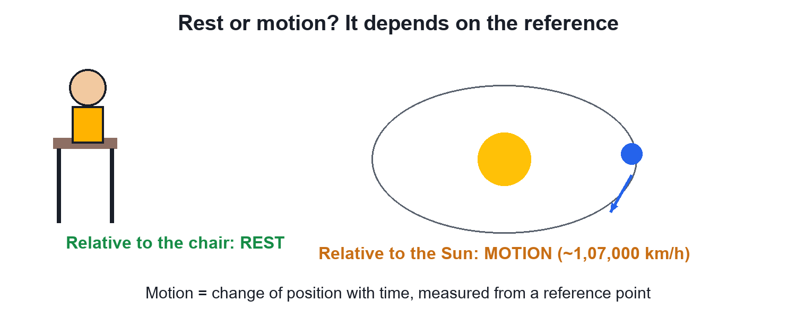
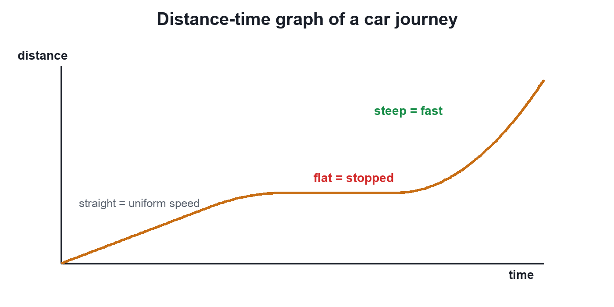
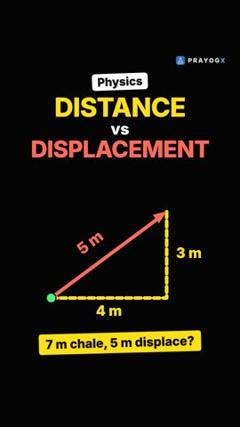
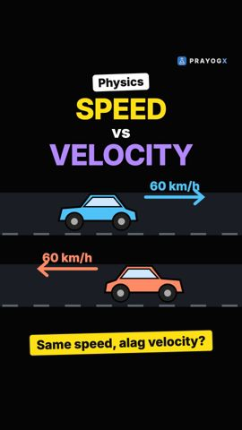
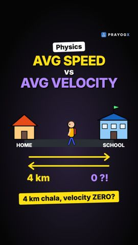

Chapter 7 · Physics
Motion: Chapter Introduction
Video not playing? Watch on Instagram · YouTube
Sitting still? With the Earth you are moving at about 1,500 km/h. Motion is a change of position with time, measured from a reference point, and this chapter gives the tools to describe it.
Download the short notesPDF, 134 KB · solved examples, practice set and answer key Up next in this chapter

Rest and Motion: Motion is RelativeAre you moving right now? It depends on who is watching. Rest and motion are always measured from a reference point.Physics · simulationKey points
- Motion = change of position with time, relative to a reference point.
- Rest and motion are relative: still for the chair, moving for the Sun.
- The chapter's tools: distance/displacement, speed/velocity, acceleration and graphs.
- On a distance-time graph: flat = at rest, steeper = faster.
Are you really at rest?
The Earth spins (about 1,500 km/h at India's latitude) and orbits the Sun (about 1,07,000 km/h). Whether you are at rest depends on what you compare with.

The chapter's toolkit
| Question | Tool |
|---|---|
| How far? | Distance and displacement |
| How fast? | Speed and velocity |
| Is the speed changing? | Acceleration |
| The whole journey | Distance-time and velocity-time graphs |
A graph tells the story

Quick quiz
4 questions. Choose an answer for each, then submit to see your score and the explanations.
More from Motion

Distance vs DisplacementDistance counts the whole path you walked; displacement only looks at the straight line from start to end, with its direction.Physics · simulation
Speed vs VelocityTwo cars at the same 60 km/h can have different velocities. Speed tells how fast; velocity also tells which way.Physics · simulation
Average Speed vs Average VelocityWalk 4 km to school and back in an hour: average speed 4 km/h, average velocity zero. One uses total distance, the other displacement.Physics · simulation